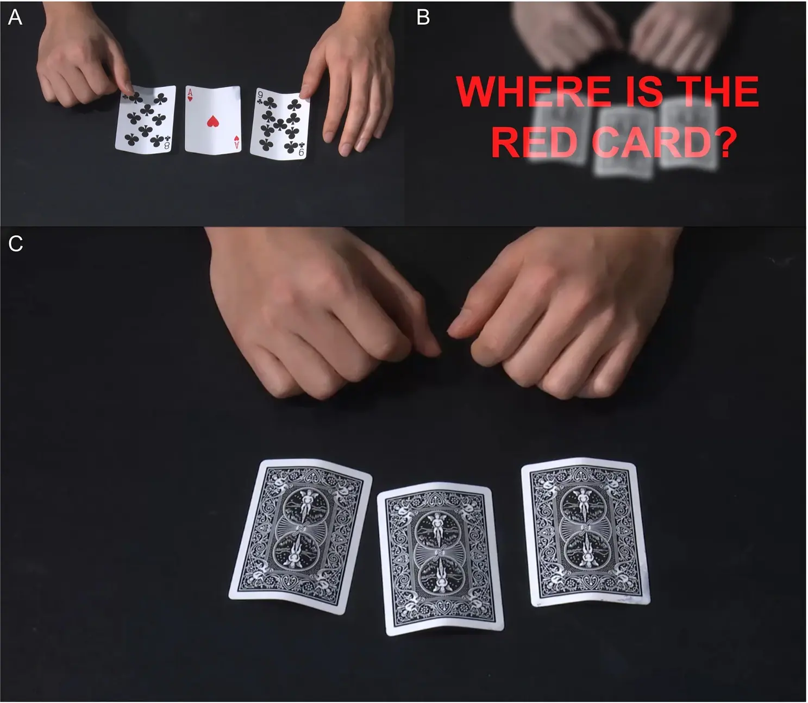
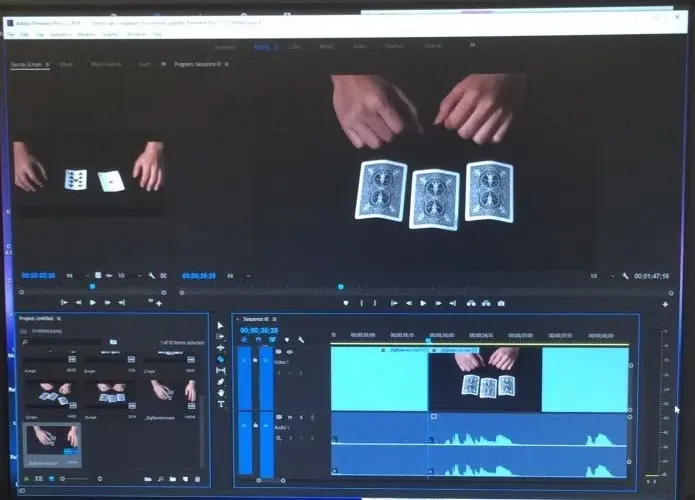

Research · 2018, published 2026
The mark nobody noticed
Time after time, spectators failed to notice a mark on the very card they were trying to follow, a mark that should have given the trick away. That observation became an experiment.
Watch the routine first, before reading on, so the secret isn’t spoiled.
- Role
- Visiting researcher; co-first author
- Lab
- Prof. Susana Martinez-Conde’s lab, SUNY Downstate, New York; supervised by Robert G. Alexander
- Timeline
- About 2.5 months in New York (2018), writing until 2020
- Published
- Scientific Reports, 2026
The question
In the Three-Card Monte, you follow the red card while the dealer shuffles and talks. I used to perform it, and on rainy days my cards got watermarked. Anyone who spotted the mark on the red card could have found it every time, and the trick should have failed. It almost never did. In my own performances I don’t tell a story; I simply comment on my moves. The few people who noticed the mark tended to be the ones not following that commentary at all.
That kind of repeated field observation is how magicians build their craft, and the lab had a long history of working with magicians to test exactly such intuitions. When they invited me, they asked what study my experience as a magician suggested. This was my answer: does the dealer’s patter actually stop people from seeing what is right in front of them?

The experiment
Participants were told they would watch a card game, never that it was a magic trick. They watched the same filmed routine five times, and six times per viewing the video paused to ask: “Where is the red card?”. The first choice was deliberately easy, as in a live performance, to build a false sense of security. The red card carried a subtle but visible water stain. Only the soundtrack changed between groups: a story that fitted the routine, a story that didn’t, or silence.
I wrote both stories. In the fitting one, the cards were the characters: Alice, Bob and Charlie go out to steal some money, and the words follow the hands, even admitting “it is starting to get confusing” when the moves turn deceptive. The other was a story too, with the same characters and the same length, but unrelated to what the hands were doing.

What we found
Nothing, and that is a result. Across all three conditions, as many people noticed the mark, and just as quickly. Their eye movements didn’t differ either. In this routine at least, patter didn’t misdirect attention, despite what many magicians assume. It may matter for other reasons: emotional engagement, rapport with the performer, and simply making the show more fun.
What I did
It was the first research project I led from start to finish. In about ten weeks, I:
- recreated and adapted a magic routine so it could work as a controlled psychology experiment;
- performed it for the camera in the university studio, filmed with Luke Ustinov: a single take that had to land in time with two different stories;
- wrote and recorded both stories, matched in length and simplicity;
- edited the clips and adjusted the contrast to control how visible the mark was;
- recruited participants door to door and ran most of the sessions myself, with eye-tracking recorded alongside, which I was trained on for the study (calibrating it was painful);
- led the first analysis and wrote the first draft of the manuscript.
The one step I didn’t do was programming the experiment itself, which our engineer, Ashwin Venkatakrishnan, took care of. It was exhausting and hands-on, and everything fell into place thanks to a great partner in Robert Alexander, who supervised me day to day.
The paper
The work was completed and published years later with the lab, as a joint first-author paper.
Nguyen, A.*, Alexander, R. G.*, Venkatakrishnan, A., Macknik, S. L., & Martinez-Conde, S. (2026). Assessing the role of magician patter on deception in the Three-Card Monte. Scientific Reports, 16, 14770. *co-first authors · Read the paper
What I learned
A field observation, repeated enough times, can become a controlled experiment. A clear “no effect” is worth publishing too: it corrects a belief many magicians hold. And leading a study from idea to manuscript showed me how much careful preparation makes speed possible.
Try it
The little game in the back room of the home page works like the real routine: the first round is fair. Play it more than once.